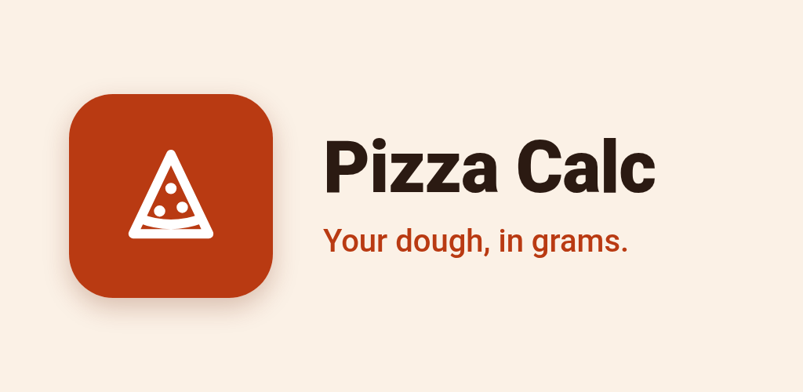
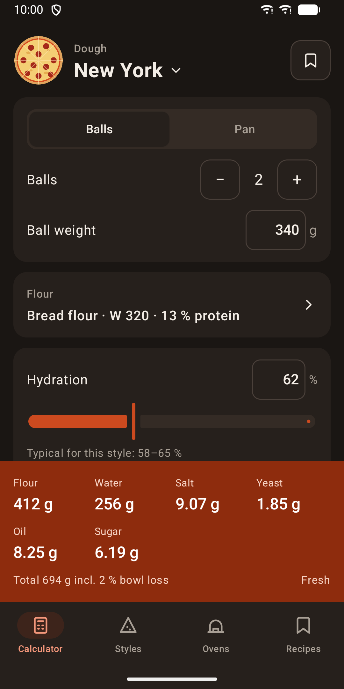
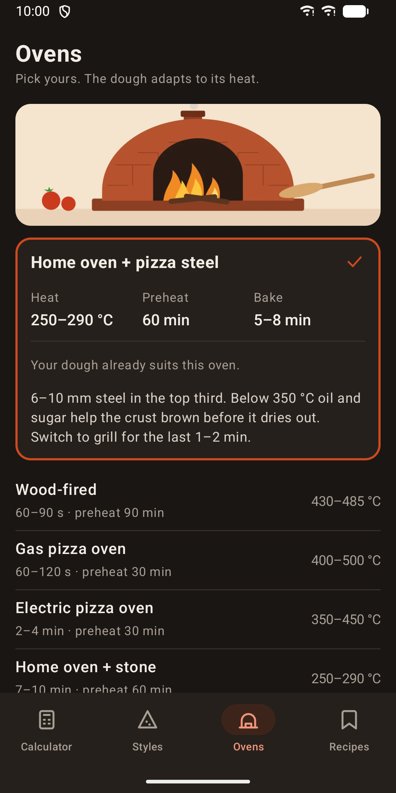
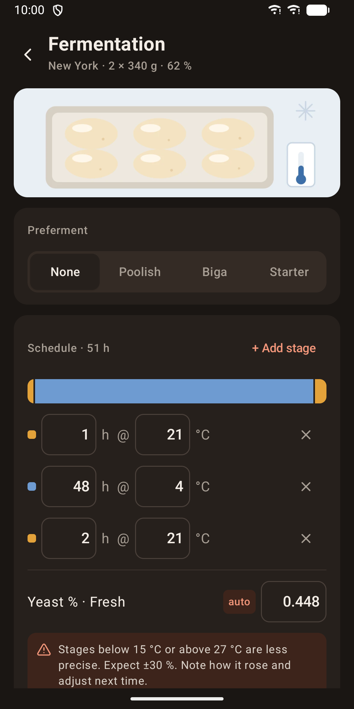

Pizza Calc: calcula tu masa
Masa de pizza en gramos: 16 estilos, levadura para cada horario y prefermentos.






Acerca de la app
Pizza Calc convierte la pizza que quieres hacer en cantidades exactas en gramos. Elige un estilo, indica el tamaño y los tiempos de fermentación, y la app te dice cuánta harina, agua, sal, levadura, aceite y azúcar necesitas. ESTILOS Empieza con uno de 16 estilos: napolitana, contemporánea, New York, romana, pinsa, teglia, Detroit, siciliana, grandma, Chicago deep dish, tavern, New Haven, California, pizza en sartén, focaccia y sin gluten. Al elegir un estilo, la calculadora se rellena con valores típicos y un consejo breve. Busca y filtra por redonda, en bandeja, pan plano o sin gluten. PORCENTAJES DE PANADERO Ajusta la hidratación, la sal, el aceite y el azúcar con controles deslizantes. Prepara bolas de masa (número y peso) o bandejas (redondas o rectangulares, con medidas y grosor). Se añade la merma del bol para que no te quedes corto. LEVADURA SEGÚN TU HORARIO Introduce hasta seis fases de horas y temperatura, por ejemplo unas horas a temperatura ambiente y dos días en la nevera. La app calcula la levadura fresca, seca activa o instantánea, o te sugiere una cantidad de masa madre. Puedes cambiar el valor a mano y volver al cálculo automático cuando quieras. Un aviso te indica cuando una fase está fuera del rango en el que el modelo es más preciso. PREFERMENTOS Usa poolish, biga o masa madre, ajusta su parte de harina y su hidratación, y obtén la masa dividida en dos pasos claros: el prefermento y la masa final. MEZCLAS DE HARINA Y TEMPERATURA DEL AGUA Mezcla hasta cuatro de 12 tipos de harina y consulta la fuerza (W) y la proteína de la mezcla. La app también te sugiere la temperatura del agua según la temperatura de masa deseada, la temperatura ambiente y el método de amasado. HORNOS Elige entre nueve hornos, desde el horno de leña hasta el horno de casa con acero o la barbacoa de tapa. Consulta el calor, el precalentado y el tiempo de horneado, y aplica con un toque los ajustes de masa sugeridos para tu horno. RECETAS Guarda, renombra, duplica y busca tus recetas. Expórtalas a un archivo de copia de seguridad y vuelve a importarlas. Tu masa actual se guarda sola y un widget la muestra en la pantalla de inicio. Y ADEMÁS Unidades métricas o imperiales, tema claro y oscuro. La app está disponible en inglés y alemán. Pizza Calc funciona totalmente sin conexión. Sin cuenta, sin anuncios, sin seguimiento. Tus recetas se quedan en tu móvil.